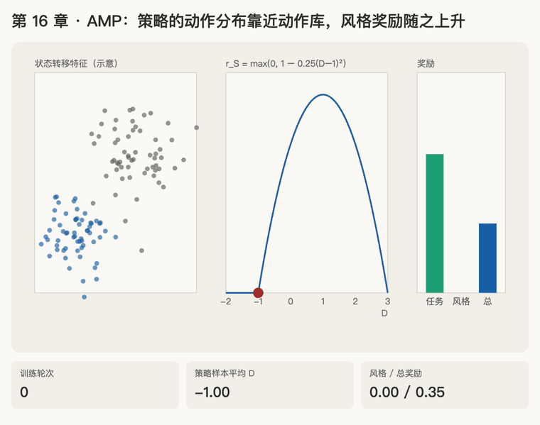

第 16 章 · AMP：不逐帧跟踪，只要求「动作像人」
本地运行
git clone https://github.com/wikieden/robot-motion-rl
cd robot-motion-rl/code/notebooks
pip install jupyterlab torch numpy
jupyter lab ch16_amp.ipynb也可以下载后直接用 VS Code 打开 .ipynb 运行。需要 GPU 的章节在 Colab 里选「代码执行程序 → 更改运行时类型 → GPU」。
本章回答：第 2 章的动作跟踪要求每一帧都和参考一样，但很多任务（朝某个方向跑、去打一个目标）没有现成的参考片段，怎么让动作还保持自然？判别器怎么变成奖励？风格奖励和任务奖励怎么配？
讲解日期：2026-11-20 · 上一章：第 15 章 iLQR 与 MPPI · 下一章：第 17 章 SHAC 与可微仿真
对应原文：AMP 论文（papers/amp-2104.02180.txtL215–L224 任务目标与风格目标、L277 式 4、L278–L302 最小二乘判别器与式 7、L348 梯度惩罚、L517 权重 w_G = w_S = 0.5）
本章缩写：AMP = Adversarial Motion Priors（对抗式 / 动作 / 先验）；GAIL = Generative Adversarial Imitation Learning（生成 / 对抗 / 模仿学习）；GAN = Generative Adversarial Network（生成 / 对抗 / 网络）；LSGAN = Least-Squares GAN（最小二乘 GAN）；D：判别器（Discriminator）；r_G、r_S：任务奖励（G = goal）、风格奖励（S = style）；w_G、w_S：两者的权重。全部缩写见 附录 · 缩写与术语表
讲解
第一步：跟踪的局限：没有参考片段怎么办（2026-11-20）
类比：学跳舞照着视频一帧一帧学（第 5 章），但「跑去门口」没有视频可照，你只希望跑的样子像个人，不要像螃蟹。
第 2 章的跟踪奖励要求有一段时间对齐的参考动作。很多任务只有目标（速度、方向、位置），没有对应的片段；只用任务奖励训，策略常会学出能完成任务但很怪的步态（拖腿、抖动、小碎步）。AMP 把「像不像人」单独做成一项奖励：给一个动作库，不要求逐帧对齐，只要求策略做出的状态转移 \((s_t, s_{t+1})\) 看起来像库里的（原文 L215–L224：风格目标是「与任务无关的动作先验」）。
一句话：跟踪要求逐帧一样，AMP 只要求看起来像，所以能配任意任务。
第二步：判别器：一个会挑毛病的裁判（2026-11-20）
类比：鉴定师看一段步态，判断是真人录的还是机器人做的。机器人努力做到让鉴定师分不出来。
GAIL / GAN 的思路：训练一个判别器 D，输入一个状态转移，输出「像真的」程度。AMP 用最小二乘版本（LSGAN，L278 起）：
- 动作库里的转移，D 往 +1 推；
- 策略做出的转移，D 往 −1 推。
损失：\(\mathbb E_{库}[(D-1)^2] + \mathbb E_{策略}[(D+1)^2]\)。
例子：
| 库里的 D | 策略的 D | 损失 | 说明 |
|---|---|---|---|
| [0.9, 1.1] | [−0.8, −1.2] | 0.05 | 裁判分得很清楚 |
| [0.2, 0.4] | [0.3, 0.1] | 1.95 | 裁判分不清，要继续学 |
判别器和策略交替训练：裁判越来越会挑，策略越来越像。为了让训练稳定，AMP 还给判别器加了梯度惩罚（§5.4，L348）。
一句话：判别器把库里的往 +1、策略的往 −1 推，它分不清时，策略就像了。
第三步：判别器输出怎么变成奖励（2026-11-20）
类比：鉴定师给打分卡：「非常像真人」满分，「完全是机器」零分。
AMP 式 7（L302）：
| D | +1 | 0 | −1 | +2 | +3 |
|---|---|---|---|---|---|
| \(r_S\) | 1.00 | 0.75 | 0.00 | 0.75 | 0.00 |
D = 1（像库里的）满分；D = −1（被认出是策略的）零分；截到 0 以上，所以和第 2 章的核一样不会出现大负数。D 超过 1 也会扣分，这个形状是二次的，梯度平滑。
一句话：\(r_S = \max(0, 1 - 0.25(D-1)^2)\)，D 越接近 1 越高。
第四步：风格奖励 + 任务奖励（2026-11-20）
AMP 式 4（L277）：
论文所有任务都用 \(w_G = w_S = 0.5\)（L517）。
例子：
| 情况 | r_G | D | r_S | r |
|---|---|---|---|---|
| 任务完成得好、动作有点怪 | 0.8 | 0 | 0.75 | 0.775 |
| 动作很像人、任务没完成 | 0.2 | 1 | 1.00 | 0.6 |
两项互相牵制：只追任务会变怪，只追像人会不干活。
放回全书：
| 第 2、5 章的跟踪 | AMP | |
|---|---|---|
| 需要什么 | 时间对齐的参考片段 | 只要一个动作库 |
| 奖励 | exp 跟踪核，逐帧 | 判别器打分 + 任务奖励 |
| 适合 | 复现一段特定动作（舞蹈、空翻） | 完成任务时保持自然（行走、转身） |
| 代价 | 每段动作都要参考 | 对抗训练，较难调 |
SuperMimic 第 4.5 节的下游速度接口用的是另一种思路：在跟踪器的潜空间上，直接用速度奖励训一个编码器（第 11 章）。
一句话：风格和任务各占一半奖励，互相牵制；有参考片段用跟踪，只有动作库用 AMP。
动画演示：判别器输出与风格奖励

可交互版：animations/16-amp.html（滑块：D 的值、任务奖励权重 w_G）。
怎么看：
- 左图：灰点是动作库的转移特征，蓝点是策略的。训练推进时蓝点向灰点靠拢（示意，第二步）。
- 中图：\(r_S = \max(0, 1 - 0.25(D-1)^2)\) 的曲线，红点是策略样本的平均 D（第三步）。
- 右图：任务奖励、风格奖励和加权总奖励的柱子；拖 w_G 看两者此消彼长（第四步）。
练习与作答记录
题 1（第三步）：D = 0.5 和 D = −0.5 时，风格奖励各是多少？
作答：（待作答）
题 2（第四步）：w_G = 0.7、w_S = 0.3，任务奖励 0.4、D = 0.5，总奖励是多少？
作答：（待作答）
题 3（第四步）：如果把权重设成 w_G = 1、w_S = 0，或者 w_G = 0、w_S = 1，AMP 分别退化成什么？各会出现什么问题？
作答：（待作答）
口诀
跟踪逐帧照视频，AMP 只求看着像；
裁判把真的推向一、假的推向负一，分不清时就像了；
一减四分之一 (D−1)²，截到零，D 越近一分越高；
任务风格各一半，互相牵制不跑偏。
本章复习卡片
M31（AMP 的判别器：最小二乘目标、梯度惩罚；为什么能不要时间对齐的参考）、M32（风格奖励 r_S = max(0, 1 − 0.25(D−1)²)；r = w_G r_G + w_S r_S，各 0.5）
附录 · 延伸阅读
留给以后深入学习用，不影响本章主线。★ 是建议先读的。
推荐阅读
| 读什么 | 读哪里 | 读它为了什么 |
|---|---|---|
| ★ AMP | papers/amp-2104.02180.txt L215–L224、L277–L302、L348、L517、附录超参（L1073 起） |
风格奖励的完整做法 |
| GAIL | cs285-deep-rl/materials/papers/gail-1606.03476.pdf（文本 papers/gail-1606.03476.txt） |
对抗式模仿学习的源头 |
| DeepMimic | papers/deepmimic-1804.02717.txt |
跟踪奖励的对照 |
| 学习计划 MC-M14 | study-plan.md | 用 AMP 训 Walker2d，和跟踪对比 |
数学原理
- 最小二乘 GAN：判别器回归到 ±1，而不是二分类的 sigmoid 交叉熵；梯度在两类重叠时不会消失，训练更稳。
- 梯度惩罚：惩罚判别器在真实样本附近的梯度大小，让它的打分曲面平滑，策略收到的奖励信号也更平滑。
公式清单
| 公式 | 意思 |
|---|---|
| \(\min_D \mathbb E_{库}[(D-1)^2] + \mathbb E_{策略}[(D+1)^2]\) | 最小二乘判别器 |
| \(r_S = \max(0, 1 - 0.25(D-1)^2)\) | 风格奖励（式 7） |
| \(r = w_G r_G + w_S r_S\) | 总奖励（式 4），\(w_G = w_S = 0.5\) |
代码对照：把本章的数字用代码算一遍
用 Python + NumPy 把讲义里讲过的数算一遍，不算练习题。代码在仓库本地
robot-motion-rl/solutions/chapter-code/ch16_amp.py，配套测试tests/test_ch12_18.py，notebook 在notebooks/ch16_amp.ipynb。Mac 上直接能跑，不需要 GPU：
bash cd robot-motion-rl/solutions/chapter-code uv run python ch16_amp.py uv run pytest tests/test_ch12_18.py
讲义 ↔ 代码（D 的值和任务奖励是编的，公式与权重取自 AMP 论文）：
| 讲义 | 公式 | 写法 | 跑出来 |
|---|---|---|---|
| 第二步 判别器损失 | (D−1)² + (D+1)² | lsgan_disc_loss(...) |
0.05、1.95 |
| 第三步 风格奖励 | 式 7 | style_reward(d) |
1.00、0.75、0.00、0.75、0.00 |
| 第四步 总奖励 | 式 4 | total_reward(0.8, 0.75) |
0.775；另一例 0.6 |
关键几行：
r_s = max(0.0, 1.0 - 0.25 * (d - 1.0) ** 2) # 式 7：D 越接近 1 越高
loss = np.mean((d_real - 1) ** 2) + np.mean((d_fake + 1) ** 2) # 库往 +1、策略往 −1
r = 0.5 * r_task + 0.5 * r_s # 式 4，论文权重各 0.5
代码里才看得到的 1 件事：
- 判别器的输入是状态转移 \((s_t, s_{t+1})\)，不含动作 a（原文 L220：\(r^S(s_t, s_{t+1})\)）；所以动作库只需要动捕的姿态序列，不需要知道人「出了多大力」。
自己改一改（不影响练习答案）：
- 把式 7 里的 0.25 改成 1，看 D = 0 时风格奖励变成多少，「截到 0」的范围变宽还是变窄。
- 把权重改成 w_G = 0.9、w_S = 0.1，重算第四步两个例子，看哪个情况更占便宜。